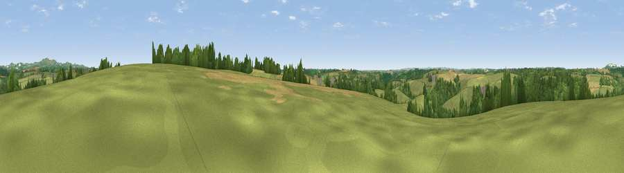

Viewpoint near Tregony
#27765 in England · top 52% of its area beats it · near Tregony · access?Where it is
The exact computed spot (SW 93175 46075). Click the marker for map links.
Public access: no public right of way or access land is recorded at this exact spot — it may be on private land. Computed from Natural England's CRoW access layer and OpenStreetMap rights of way — not the legal definitive map. Always verify locally.
The view, rendered

A 360° render of this exact spot computed from the terrain model, tree cover and land cover — summer colours, afternoon light, calibrated against photographs of famous viewpoints. Real trees, hedges and buildings will differ in detail.
The panorama
Grey silhouette: terrain skyline in each direction (720 bearings, Earth curvature and refraction included). Dashed green: skyline with trees (+15 m) and buildings (+8 m) as obstacles. Blue strip: how far the ground is visible on each bearing.
Where the view opens
Wedge length = distance to the farthest visible ground on that bearing (vegetation-aware). Rings at 10, 25 and 50 km.
What fills the view
59% grassland · 29% woodland · 10% cropland · 1% built-up
Angular shares of the visible panorama (visual magnitude), not map area. Landscape diversity 0.42 (0–1 Shannon).
Key numbers
More beautiful places nearby
The staircase of upgrades: each row has a higher view potential than everything closer. Driving times are estimates from straight-line distance, calibrated against real road routing — check an actual route before setting out.
| Place | Direction | Drive | Score |
|---|---|---|---|
| Viewpoint near Tregony | WSW · 2 km | ~6 min | 43.1 |
| Viewpoint near Grampound | NNE · 3 km | ~7 min | 45.0 |
| Trebollack Hill | WSW · 5 km | ~11 min | 47.0 |
| Viewpoint near Portloe | SE · 6 km | ~12 min | 74.4 |
| Viewpoint near Foxhole | NNE · 9 km | ~17 min | 84.3 |
| Viewpoint near Foxhole | NNE · 9 km | ~18 min | 86.4 |
| Viewpoint near Stenalees | NNE · 13 km | ~24 min | 88.0 |
| Viewpoint near Crackington Haven | NNE · 52 km | ~73 min | 88.1 |
50.27832, -4.90420 · source: screening · position refined by local search. Computed location — check access rights before visiting.